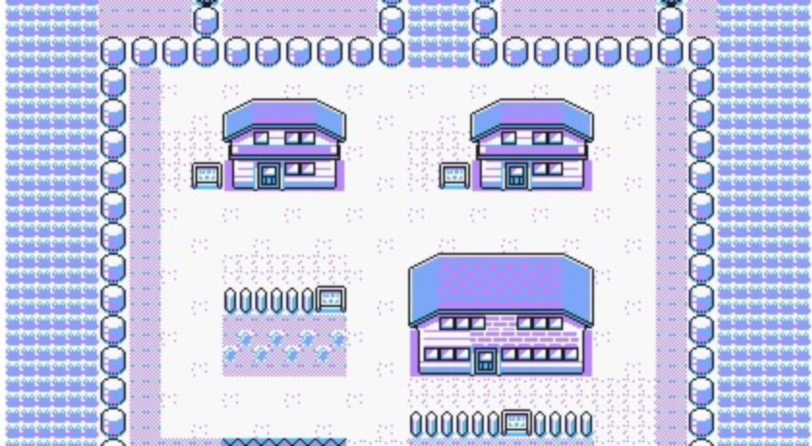

An Uninteresting Series Of Events...
Growing up I didn't really have any kind of inspiring experiences or influences that swayed me towards any interests. Due to this, I didn't really stumble upon anything that got me excited as a hobby often. Because there just wasn't much that I felt like I was to do, I ended up spening time just playing video games as a hobby -- which ironically ended up being my first exposure to technology!
I floated through highschool doing a mixed bag of subjects, and without much direction I ended up settling my next step by deciding to go to University for a "reliable" degree in Business.
This ended up in a very frustrating initial first year at the University of Technology Sydney, as I learned, even if I don't have any particlar affinity to something i know of, that doesn't mean I can't have a dislike for things I don't!
Eventually, I stopped putting off picking a major and explored my options with the course handbook. Although initially finding that IT was an offered choice for the course to be quite strange, after weeks of deliberation, I couldn't deny that it seemed the most fun and likely to stir an interest in me.
From the very first year of classes which I started taking in this major to the writing of this code right now, I've without fail enjoyed each and every class!
Armed with this newfound realisation and confidence, I looked explore the potential of what I could be doing aside from accounting prospects ... which evidently included quitting my job then at a Club RSL establishment, and forcing myself to find IT related work as a promise to my personal resolve.
It was probably a rash idea to quit before finding work, but going back I probably would've done it again! I'm now going on 2 years in a humble on-site desktop support role and haven't the faintest shadow of doubt that IT is where I want to be moving forward
Click onto the next tab and I'll let you in on what I have planned!
